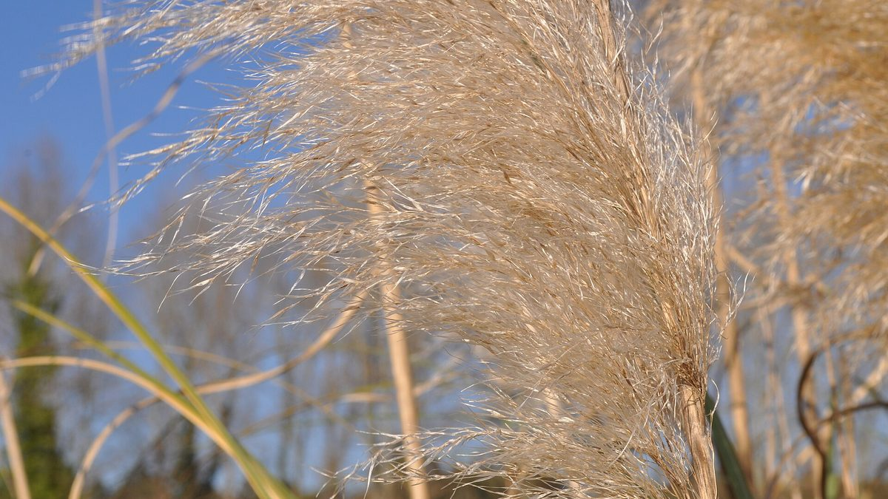
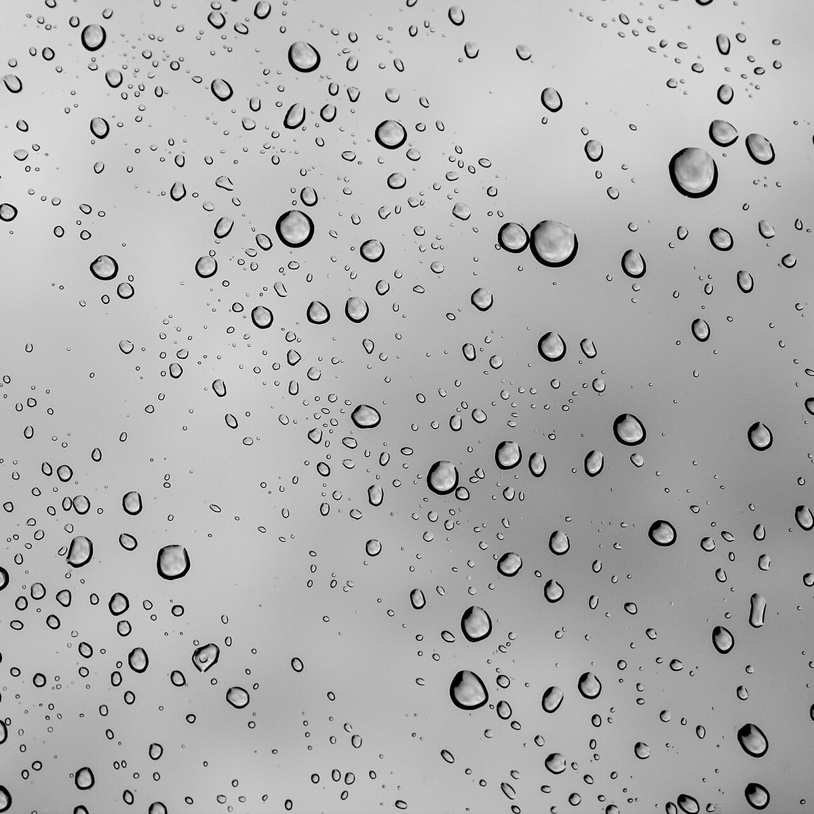

ここに掲載しているのは実際のお客様の声ではありません。口コミのイメージをお伝えするために制作側が作成した例です。

掲載写真はフリー素材のイメージで、店舗の実際の様子ではありません。他地域で撮影されたもの、撮影地が不明なものを含みます。
イメージ例電話をかける前は少し緊張していましたが、話しやすくて気持ちが軽くなりました。気になることを相談できたので、安心して当日を迎えられました。
イメージ例仕上がりを鏡で見たとき、思わず笑顔になりました。帰り道も足取りが軽くて、明日からの毎日が少し楽しみになりました。

気軽に電話で問い合わせることができました。帰るころには、次はいつにしようかなと考えている自分がいて、また来たいと思える時間でした。
ご予約・ご相談は